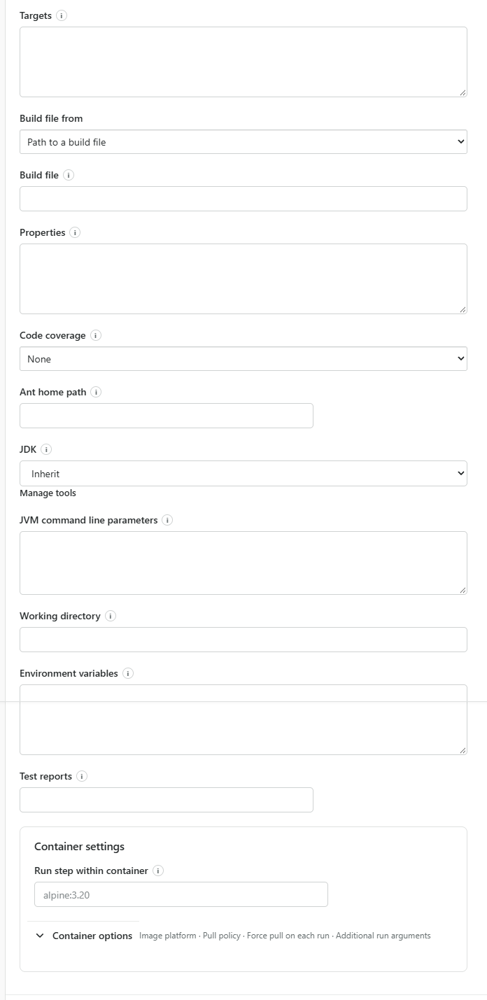

Ant
Runs Apache Ant targets with a build file and properties.
When to use it
Use it for Java projects that still build with Ant, such as an Android launcher or an old server tool.
How to set it up
- Open the build configuration and click Settings › Build Steps.
- Click Add build step. Type
Antin Filter step types if you like, then click the Ant tile (group Build tools). - Type a Step name, for example
Build launcher. - Fill in the fields described below.
- Optional: set Execute step, Conditions and Retry on failure. See The steps list and the step editor.
- Click Save.

Every field
| Field | What it does | Default | Example |
|---|---|---|---|
| Targets | One target per line. Empty runs the default target of the build file. | Empty | clean then dist |
| Build file from | Path to a build file or Content written here. | Path to a build file | Path to a build file |
| Build file | Passed as -f. Empty lets Ant use build.xml in the working directory. | Empty | tools/build.xml |
| Build file content | The build.xml itself. It is written to a temporary file in the working directory, passed as -f and removed afterwards. Build parameters are in the environment as env.NAME. | Empty | An Ant project |
| Properties | One name=value per line, passed as -Dname=value. Other processes can see them, so pass a secret through the environment. | Empty | version=1.4 |
| Ant home path | Where Ant is installed. Empty takes ant from the PATH, and the build configuration then needs an agent that has it. May use %name% parameters. | Empty | C:\tools\ant |
| Code coverage | None or JaCoCo, as in Gradle and Maven. | None | JaCoCo |
| JaCoCo folder on the agent | An unpacked JaCoCo download with lib/jacocoagent.jar and lib/jacococli.jar. The agent goes into JAVA_TOOL_OPTIONS, so every JVM prints a Picked up JAVA_TOOL_OPTIONS line. | Empty | C:\tools\jacoco |
| Class folders for the report | Folders with compiled classes, one per line, relative to the working directory. Empty keeps only the exec file and makes no report. | Empty | build/classes |
| Include classes | One class pattern per line, such as com.acme.*. A star matches any characters, a question mark one. Empty measures every class. Only letters, digits, dot, star, question mark, dollar, underscore and dash. | Empty | com.studio.* |
| Exclude classes | One class pattern per line. A match is left out of the totals. The HTML report still lists it. | Empty | *.Generated* |
| JDK | Inherit uses the JDK of the build configuration, or the java of the agent. A JDK from Settings › Tools sets JAVA_HOME for this step. Not available in a container: the image brings its own Java. | Inherit | JDK 21 |
| JVM command line parameters | One parameter per line, such as -Xmx2g. They go in the variable the tool reads and are added to what is set there. A parameter cannot hold a space or quote. Do not put a secret here. | Empty | -Xmx2g |
| Working directory, Environment variables, Test reports, Run step within container | The same in every runner. See Fields every runner has. |
A worked example
Build a distribution jar for the launcher. Step name Build launcher, Targets clean and dist on two lines, Properties version=1.4.%build.number%.
What you see when it runs
The console shows $ ant -Dversion=1.4.57 clean dist and Ant's target list. A BUILD FAILED line fails the step. With JaCoCo on, the build page shows the coverage totals.
Problems and fixes
| Problem | What to do |
|---|---|
| Ant was not found on this agent | Install Ant or set Ant home path. |
| The Ant step is set to a build file written in the step, and it is empty | Type the build file, or switch to Path to a build file. |
| A property of the Ant step is not name=value | Use name=value. A name holds letters, digits, dot, dash and underscore. |
| The JaCoCo folder is not set / has no lib/jacocoagent.jar | Point JaCoCo folder on the agent to the unpacked download. |